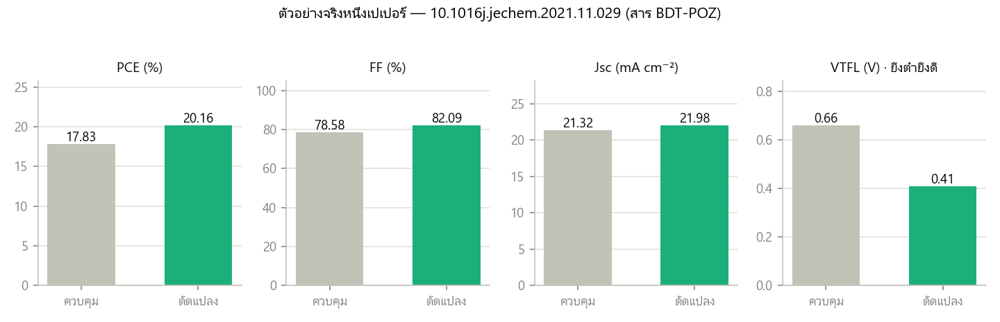
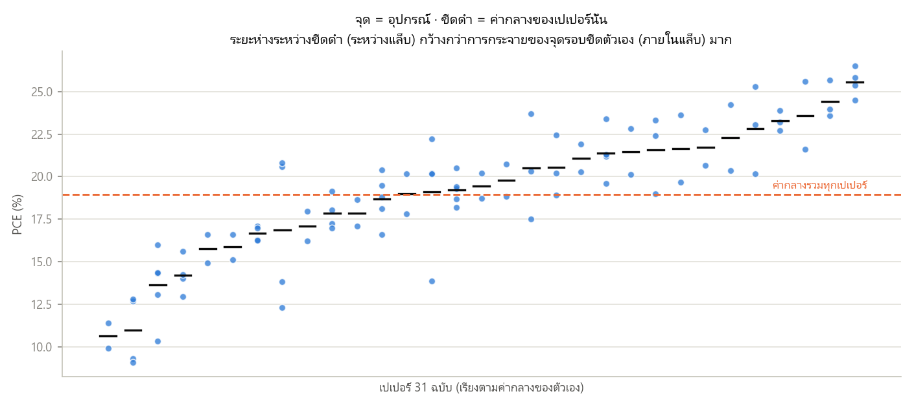

เอกสารนี้ตอบว่า ทำไมถึงทำแบบนี้ ไม่ใช่แค่ทำอะไรไปบ้าง
เริ่มจากศูนย์ ไม่ต้องอ่าน model_report มาก่อน
หนึ่ง ข้อมูลไม่ได้เป็นแถวอิสระ 95 แถว แต่เป็น 31 ก้อน แต่ละก้อนคือหนึ่งเปเปอร์ ที่ทำการทดลองเทียบ «ก่อน–หลังดัดแปลง» ของตัวเอง
สอง ความต่างระหว่างก้อนใหญ่กว่าความต่างภายในก้อนมาก ถ้าถามว่า «อุปกรณ์นี้ได้ PCE เท่าไร» คำตอบเกือบทั้งหมดคือ «แล้วแต่ว่าแล็บไหนทำ» ซึ่งไม่ใช่ความรู้ที่เราต้องการ
สาม จึงเปลี่ยนคำถามเป็น «ภายในแล็บเดียวกัน การดัดแปลงทำให้ดีขึ้นเท่าไร» คำถามนี้ตอบได้ และตรงกับสิ่งที่แล็บอยากรู้จริง
จุดตั้งต้นของทุกอย่าง: ข้อมูลนี้ ไม่ใช่ ตาราง 95 แถวที่แต่ละแถวเป็นอิสระต่อกัน
10.1016j.jechem.2021.11.029 เคลือบผิว HTL ด้วย BDT-POZ
ทำอุปกรณ์ควบคุม 1 ตัว และอุปกรณ์ที่ดัดแปลง 1 ตัว
ในแล็บเดียวกัน วันเดียวกัน สูตรเดียวกัน ต่างกันแค่มีสารเคลือบหรือไม่มี

ผลต่างในกรอบแบบนี้เชื่อได้ เพราะทุกอย่างนอกจากสารเคลือบถูกตรึงไว้หมดแล้วโดยตัวแล็บเอง งานของเราคือรวมการทดลองแบบนี้จากหลายแล็บเข้าด้วยกันอย่างถูกวิธี
ความแปรปรวนของ PCE ส่วนใหญ่ไม่ได้มาจากการดัดแปลง แต่มาจาก «แล็บไหนเป็นคนทำ»

การแบ่งข้อมูลแบบสุ่มทั่วไปใช้ไม่ได้ที่นี่ และเหตุผลตรงไปตรงมามาก
แต่ละรอบเหลืออุปกรณ์ทดสอบแค่ 2–5 ตัว (13 รอบมีแค่ 2 ตัว) การให้คะแนนความแม่นของรอบที่มี 2 ตัวแล้วเอามาเฉลี่ย จะได้ตัวเลขที่แกว่งจนไม่มีความหมาย
วิธีแก้: เก็บคำทำนายของทุกอุปกรณ์จากทุกรอบไว้ก่อน แล้วค่อยคิดคะแนนครั้งเดียวบนกองรวม
โจทย์เดียวกัน ข้อมูลชุดเดียวกัน แต่ถามคนละแบบ แล้วได้ผลคนละเรื่อง
การลบค่ากลางต้องใช้ค่ากลางของเปเปอร์นั้น — ฟังดูเหมือนโกง แต่ในการใช้งานจริง แล็บมีอุปกรณ์ควบคุมของตัวเองอยู่แล้วเสมอ เขาไม่เคยถามว่า «อุปกรณ์ฉันจะได้กี่เปอร์เซ็นต์» เขาถามว่า «ถ้าเติมสารนี้ ฉันจะดีขึ้นกว่าเดิมเท่าไร» ซึ่งคือคำถามที่ 2 พอดี
เอาตัวแปรมาแบ่งเป็นสองกลุ่ม แล้ววัดแยกกันว่าคะแนนมาจากกลุ่มไหน
| กลุ่มตัวแปร | มีอะไรบ้าง | ถ้ากลุ่มนี้ทำนายได้ แปลว่า |
|---|---|---|
| ตัวแปรหลัก | htl_mod_kind htl_dope htl_route — สิ่งที่แล็บเลือกทำกับชั้น HTL | โมเดลเรียนผลของการดัดแปลง — สิ่งที่เราต้องการ |
| ตัวควบคุม | a_Cs a_FA x_Br etl_family — สูตรเคมีและชนิด ETL | โมเดลเรียนว่าแล็บไหนทำ — สูตรของแต่ละแล็บเกือบไม่ซ้ำกัน จึงเป็นลายนิ้วมือ |
ช่องบนซ้าย (-0.057) ตัวแปรการดัดแปลงทำนายค่าดิบไม่ได้เลย — สมเหตุผล เพราะรู้ว่าเคลือบสารอะไร ก็ยังไม่รู้ว่าแล็บนั้นเก่งแค่ไหน
ช่องล่างซ้าย (+0.259) สูตรเคมีทำนายค่าดิบได้ดีกว่า — แต่ไม่ใช่เพราะสูตรเคมีทำให้ประสิทธิภาพดี มันแค่บอกใบ้ว่านี่คือเปเปอร์ไหน แล้วเปเปอร์นั้นได้ประมาณเท่าไร นี่คือการจำ ไม่ใช่การเข้าใจ
ช่องล่างขวา (-0.001) พอลบค่ากลางเปเปอร์ ตัวควบคุมเหลือศูนย์พอดี — ตามที่ทฤษฎีบอกทุกประการ เพราะมันคงที่ภายในเปเปอร์อยู่แล้ว จึงไม่เหลือข้อมูลอะไรเลย
ช่องบนขวา (+0.178) คือช่องเดียวที่เป็นความรู้จริง
บทเรียนที่ใช้ได้กับงานอื่น: งานที่รายงานคะแนนเดียวจากการเทรนข้ามแล็บ โดยไม่แยกดูว่าคะแนนมาจากกลุ่มตัวแปรไหน อาจกำลังรายงานความสามารถในการจำแล็บ
รู้แล้วว่าดัดแปลงแล้วดีขึ้น คำถามถัดไปคือดีขึ้นเพราะอะไร
PCE ไม่ใช่ตัวเลขก้อนเดียว แต่เป็นผลคูณของสามส่วน PCE = Voc × Jsc × FF ÷ 100 การดูว่าส่วนไหนขยับ บอกกลไกได้
| ถ้าเป็นกลไกเดียว ควรเห็น | ที่วัดได้จริง | แปลว่า |
|---|---|---|
| FF กับ Jsc ขึ้นลงพร้อมกัน | สหสัมพันธ์ -0.02 (จาก 22 เปเปอร์) | ไม่เกี่ยวกันเลย — คนละกลไก |
| VTFL เกาะกับทุกส่วนพอ ๆ กัน | เกาะ FF +0.35 · เกาะ Voc -0.08 | เจาะจงกับ FF เท่านั้น |
| มุมสัมผัสเกาะกับทุกส่วนพอ ๆ กัน | เกาะ Jsc +0.65 · เกาะ FF -0.10 | เจาะจงกับ Jsc เท่านั้น |
สหสัมพันธ์อ่านง่าย ๆ คือ +1 หมายถึงขึ้นด้วยกันเสมอ · −1 หมายถึงสวนทางกันเสมอ · 0 หมายถึงไม่เกี่ยวกันเลย · ตัวเลขพวกนี้คำนวณโดยใช้ หนึ่งเปเปอร์เป็นหนึ่งจุด ไม่ใช่หนึ่งอุปกรณ์
ทิศทางของช่องกายภาพตรงข้ามกับที่คาดไว้ตอนแรก — ข้อมูลบอกว่าผิวที่ ไม่ชอบน้ำมากขึ้น ให้ Jsc ดีขึ้น ไม่ใช่ผิวที่เปียกง่ายขึ้น อธิบายได้ว่าผิวไม่ชอบน้ำทำให้จุดก่อผลึกน้อยลง เกรนจึงโตใหญ่ขึ้น แต่นี่คือการตีความ ข้อต่อ «เกรนใหญ่ขึ้น» ยังยืนบนเปเปอร์น้อยมาก
recheck แล้วสร้างใหม่ทั้งเส้น ห้ามแก้ไฟล์ผลลัพธ์ด้วยมือ| ไฟล์ | ใช้ตอนไหน |
|---|---|
processed/model/*.csv | ตัวเลขดิบทั้งหมด · รายงานทุกฉบับอ่านจากที่นี่ |
paper_provenance.csv | ข้ออ้างแต่ละข้อมาจากเปเปอร์ไหนบ้าง — ใช้ตรวจย้อนด้วยมือ |
paper_evidence_table.csv | รายเปเปอร์: ค่าควบคุม → ค่าหลังดัดแปลง → ผลต่าง |
reports/model_report.html | รายงานผลฉบับเต็ม พร้อมข้อจำกัด |
reports/model_flow.html | เอกสารนี้ — ฉบับอธิบายว่าทำไมถึงทำแบบนี้ |
ขนาดผล ΔPCE ค่ากลาง +1.995 · ทิศบวก 21/22 · p=1.097e-05 — วัดจากเปเปอร์ที่มีคู่เทียบ 22 ฉบับ หนึ่งฉบับหนึ่งเสียง
กลไก แยกได้ว่ามีอย่างน้อยสองทางที่เป็นอิสระต่อกัน ซึ่งเปเปอร์เดี่ยวมองไม่เห็น เพราะแต่ละฉบับมีสารเดียว
ระเบียบวิธี แสดงให้เห็นตรง ๆ ว่าคะแนนที่ดูดีจากการเทรนข้ามแล็บ มาจากการจำแล็บ
ทุกข้อคือสมมติฐานสำหรับการทดลองยืนยันในแล็บ ไม่ใช่ข้อสรุปเชิงสาเหตุ · และต้องประกาศอคติจากการตีพิมพ์เสมอ เพราะไม่มีใครตีพิมพ์การดัดแปลงที่ล้มเหลว